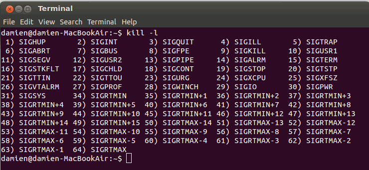
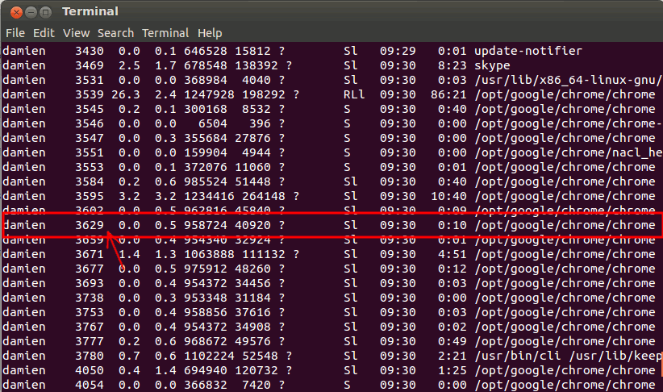
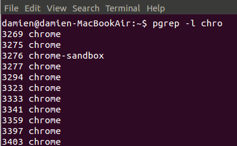

Команды и сигналы Kill
Когда вы выполняете команду "kill", то фактически вы посылаете системе сигнал, чтобы заставить ее завершить некорректно ведущее себя приложение. Всего вы можете использовать до 60 сигналов, но все, что нужно знать, это SIGTERM (15) и SIGKILL (9).
Вы можете просмотреть все сигналы с помощью команды:
$ kill -l

SIGTERM - этот сигнал запрашивает остановку работы процесса. Он может быть проигнорирован. Процессу дается время на корректное завершение. Если программа завершается корректно, значит она использовала данное время на то, чтобы сохранить свое состояние или результаты работы и освободить ресурсы. Другими словами, ее не заставляли остановиться.
SIGKILL - этот сигнал заставляет процесс прекратить работу немедленно. Программа не может проигнорировать этот сигнал. Несохраненные результаты будут потеряны.
Синтаксис использования "kill":
$ kill [сигнал или опция] PID
Сигнал по умолчанию (если он не задан) - SIGTERM. Если он не помогает, для принудительного завершения процесса можно использовать следующие варианты:
$ kill SIGKILL PID
$ kill -9 PID
где флаг "-9" ссылается на сигнал SIGKILL.
Если вы не знаете точно PID приложения, просто запустите команду:
$ ps ux
Она выведет информацию по всем запущенным программам.

Например, чтобы завершить Chrome, я введу команду:
$ kill -9 3629
Также обратите внимание, что можно завершать несколько процессов одной командой.
$ kill -9 PID1 PID2 PID 3
PKill
Команда "pkill" позволяет использовать расширенные шаблоны регулярных выражений и другие критерии соответствия. Вместо использования PID вы теперь можете завершить приложение, введя имя его процесса. Например, для завершения работы Firefox просто введите команду:
$ pkill firefox
Так как оно соответствует шаблону регулярного выражения, вы можете также ввести имя только частично, например:
$ pkill fire
Чтобы предотвратить завершение не тех приложений, которые требовалось, можно использовать команду "pgrep -l [process name]" для вывода списка всех подходящих процессов.

Killall
Killall также использует имя процесса вместо PID и завершает все экземпляры процесса с этим именем. Например, если вы запустили несколько экземпляров Firefox, вы можете завершить их все с помощью команды:
$ killall firefox
В Gnome вы можете перезапустить Nautilus с помощью команды:
$ killall nautilus
xkill
Xkill - это графический способ завершения приложений. Когда вы введете "xkill" в терминале, курсор примет вид крестика. Все, что вам требуется, кликнуть этим крестиком в окне нужного приложения и оно немедленно завершится. Если вам понравится такой способ, можно настроить для активации xkill горячие клавиши.
Заключение
Если приложение ведет себя неправильно и вызывает зависание системы, очень заманчиво перезагрузить компьютер и начать сеанс заново. С помощью этих команд "kill" вы можете завершить зависшее приложение без опасности для работы системы. Это особенно полезно для серверов, когда вы не хотите, чтобы зависшая программа привела к выключению всего сервера.
=============================================================
ASUS wifi
MAC 00 1b fc 81 8b 91